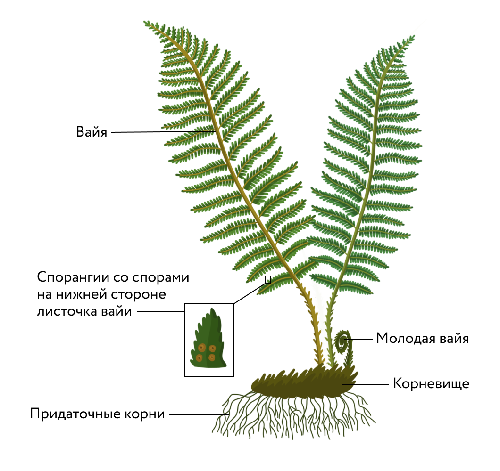

Расцвет этой группы пришёлся на конец палеозойской — начало мезозойской
эры, именно в этот период наблюдалось их максимальное видовое разнообразие
и численное обилие, а гигантские древовидные папоротники во многом
определяли ландшафтный облик планеты. С тех доисторических времён многие
виды папоротниковидных вымерли. В настоящее время большинство папоротников
произрастают в тропиках, в России — всего 161 вид. Наука, изучающая
папоротники, плауны и хвощи, называется птеридологией (от др.-греч. pteris
[птэ́рис] — «папоротник»). К споровым сосудистым растениям относят отделы
папоротниковидных, хвощевидных и плауновидных. Иногда для обозначения всех
растений этой группы используют внетаксономическое название
«папоротникообразные».
Возникли в девоне. Биологического расцвета достигли в каменноугольном
периоде, став основной лесообразующей группой того времени. Остатки
древних лесов образовали обширные залежи каменного угля.
Наибольшее обилие современных видов наблюдается в тропической зоне.
Предпочитают влажные местообитания.
Имеют хорошо сформированные ткани: фотосинтезирующую, проводящую,
механическую, покровную.
Тело бесполого поколения — спорофита — расчленено на органы: стебель,
придаточные корни, листья.
В жизненном цикле преобладает диплоидный спорофит.
Гаплоидный гаметофит (за́росток) имеет пластинчатое слоевищное строение
и ризоиды.
Размножение половое и бесполое (спорообразование и вегетативное).
Органы полового размножения многоклеточные.
Мужские гаметы подвижны; для передвижения сперматозоида к яйцеклетке
нужна капельно-жидкая влага.
Экологические особенности и многообразие папоротников Представители этой
группы широко распространены по земному шару, их можно встретить в разных
климатических зонах и растительных сообществах. Предпочитают влажные
местообитания, наиболее многочисленны в тропиках и субтропиках. Жизненные
формы: преимущественно многолетние травянистые растения, реже деревья или
лианы. Есть эпифитные (олений рог) и водные (сальвиния) формы. Самым
крупным классом в отделе Папоротниковидные является класс Папоротниковые,
или Настоящие папоротники. В лесах умеренной зоны нашей страны наиболее
часто встречаются такие представители этого класса как щитовник мужской,
кочедыжник женский, орляк, страусник.
Олений рог
Строение папоротников
Имеют вегетативные органы (придаточные корни и побег) и развитые ткани
(покровные, механические, проводящие). У большинства папоротников
умеренной зоны есть подземное корневище с придаточными корнями. На
корневищах каждый год образуются новые розетки листьев.

Строение папоротника
Листья папоротников — вайи (от др.-греч. baion [ба́йон] — «пальмовая
ветвь») — реже цельные, чаще сложно расчленённые, с хорошо развитой
проводящей системой. В зачаточном состоянии вайя спирально свёрнута, её
развитие происходит из этой «улитки». На обратной стороне или по краю
листьев развиваются органы бесполого размножения — спорангии, в которых
созревают споры.
Значение папоротников
Средообразующий компонент
Средообразующий компонент В зарослях папоротников обитает множество мелких
животных (червей, моллюсков, членистоногих), гнездятся птицы (садовая
славка, камышовка). В зарослях корней водных папоротников, например
сальвинии, укрываются водные беспозвоночные и мальки; рыбы используют их
как субстрат для откладывания икры.
Звено пищевых цепей
Многие папоротники ядовиты для теплокровных, поэтому они редко служат
основной пищей для растительноядных организмов, но некоторые виды
насекомых, например двухточечный листоед, питаются в том числе листьями
папоротника.
Выделение кислорода
Как и все зелёные растения, папоротники выделяют кислород, однако их вклад
в формирование кислородной атмосферы Земли незначителен.
Образование каменного угля
Отпечатки древних папоротников хорошо сохранились на каменноугольных
пластах, таким образом, виды этой группы растений принимали участие в
образовании ископаемого каменного угля. Сегодня уголь — это важнейший вид
топлива и сырья для химической промышленности.
Отпечаток листа ископаемого папоротника на куске каменного угля
Фиксация азота
Некоторые водные папоротники образуют симбиоз с азотфиксирующими
цианобактериями, поэтому в Восточной Азии их разводят на рисовых полях в
качестве источника соединений азота.
Пищевой продукт
Молодые листья некоторых видов папоротников (орляка, страусника)
употребляют в пищу.
Ядовитые виды
Многие виды папоротников (щитовник, кочедыжник), особенно их корневища,
ядовиты для человека.
Сырьё для производства лекарственных препаратов
Из ядовитого папоротника щитовника получают лекарственные препараты для
выведения паразитических червей.
Декоративные растения
Некоторые папоротники (нефролепис, адиантум) используются в качестве
комнатных растений, другие, например страусник, — при создании интерьеров
в парках, садах, скверах.